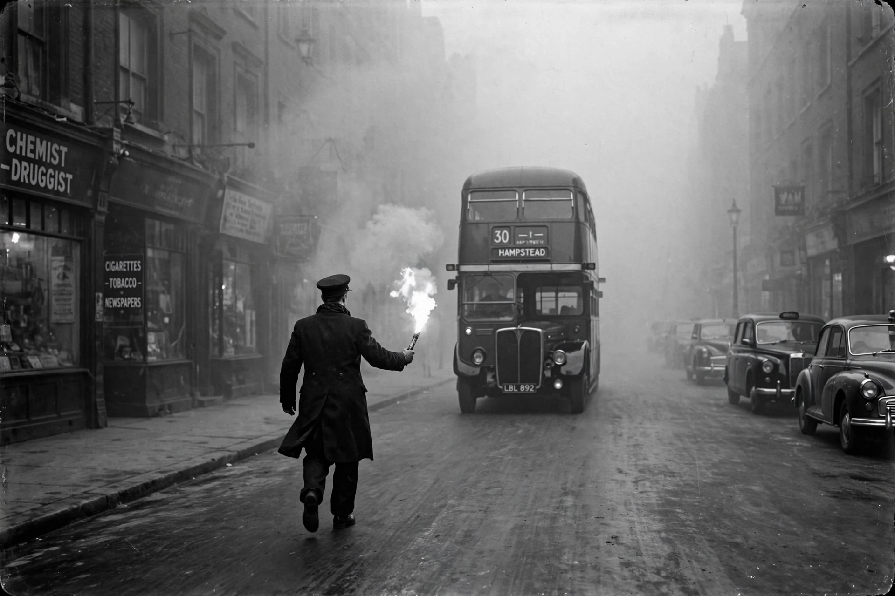

Smog

Smog is a type of intense Air pollution, named by blending 'smoke' and 'fog'. The word originally described the coal-smoke fogs of industrial cities; today it more often means photochemical smog, the hazy, oxidising mixture formed when sunlight acts on vehicle and industrial emissions.
Smog episodes can reduce visibility to metres, close schools and airports, and send hospital admissions soaring.
Two kinds
Sulphurous (London) smog combines smoke, sulphur dioxide and fog in cold, damp, still air — the recipe of the Great Smog of December 1952, which killed thousands of Londoners (estimates range from about four thousand at the time to around twelve thousand in later analyses) and led directly to Britain's Clean Air Act 1956 and the end of the pea-souper era.
Photochemical (Los Angeles) smog forms in warm sunshine from nitrogen oxides and volatile organic compounds, producing ground-level ozone and peroxyacetyl nitrate, which sting eyes and damage lungs and crops. First recognised in the 1940s, it drove California's pioneering vehicle-emission rules.
Today
Coal smogs have receded where clean-air laws bit, but photochemical and mixed smogs afflict megacities across Asia, the Middle East and Latin America, and wildfire smoke increasingly produces smog-like episodes on other continents. Forecast smog alerts and emergency measures (traffic restrictions, factory curbs) are now routine in many cities. See {L('Air_pollution')}.
See also: Air pollution · Pollution · Ozone · Fossil fuel · Environmental protection